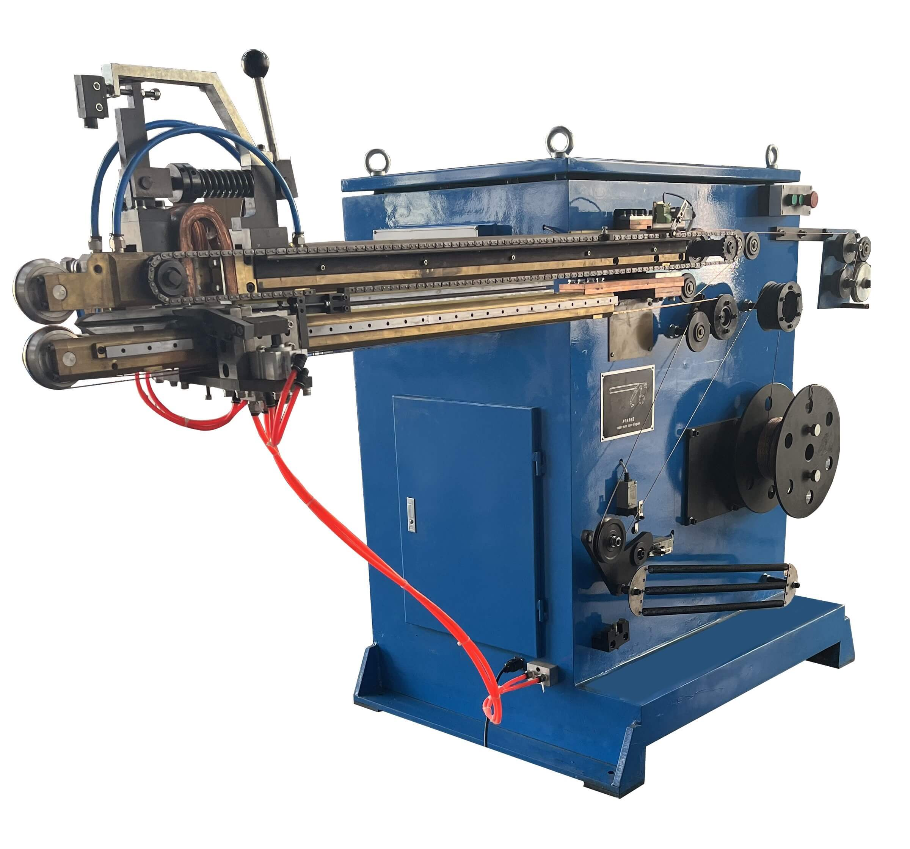
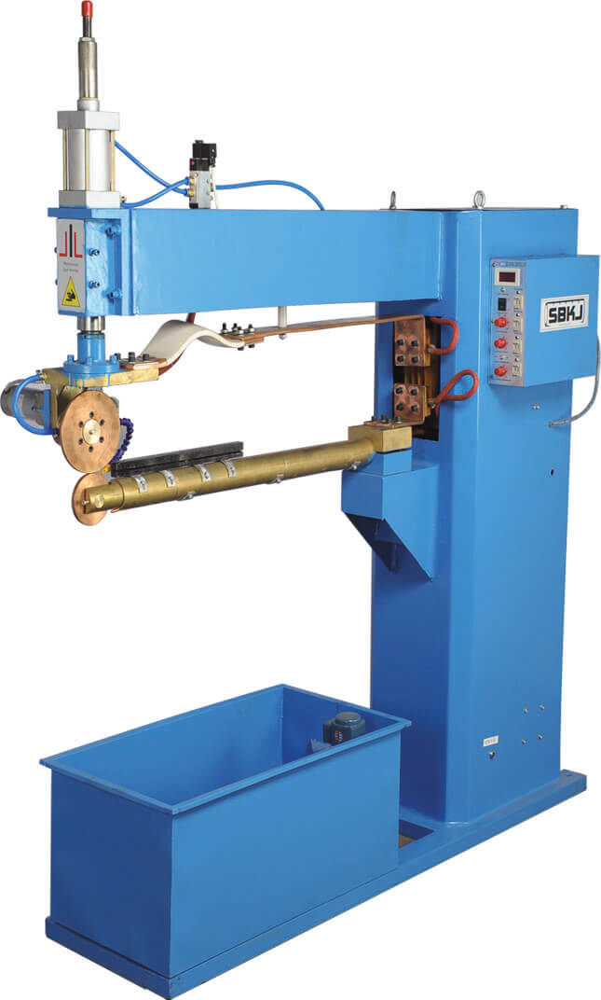
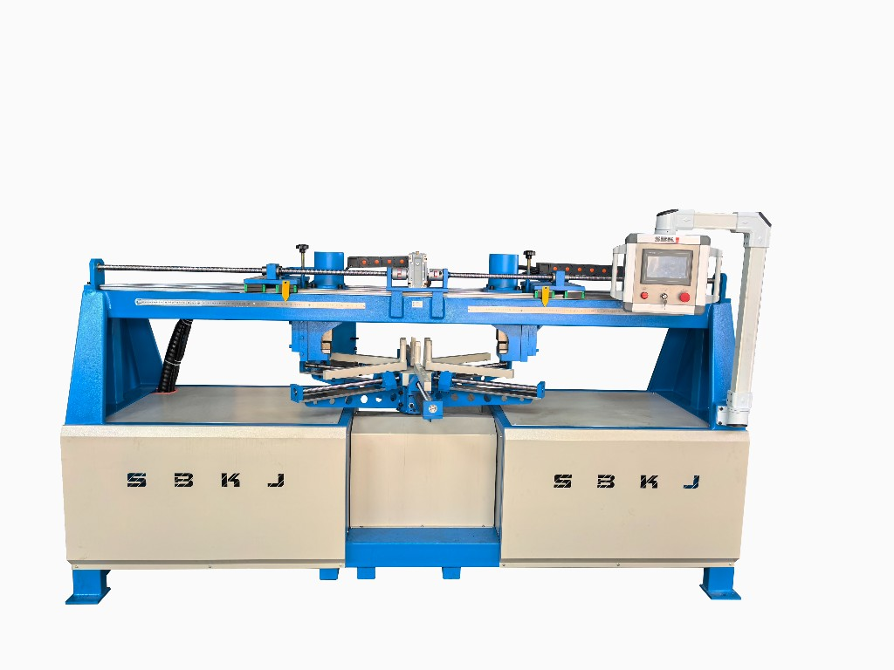
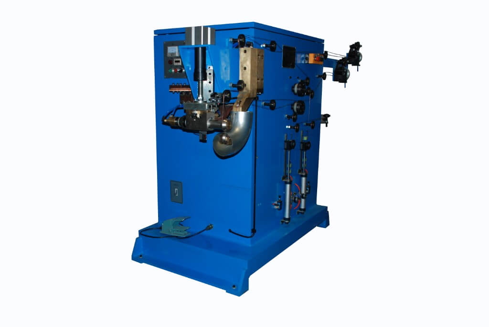
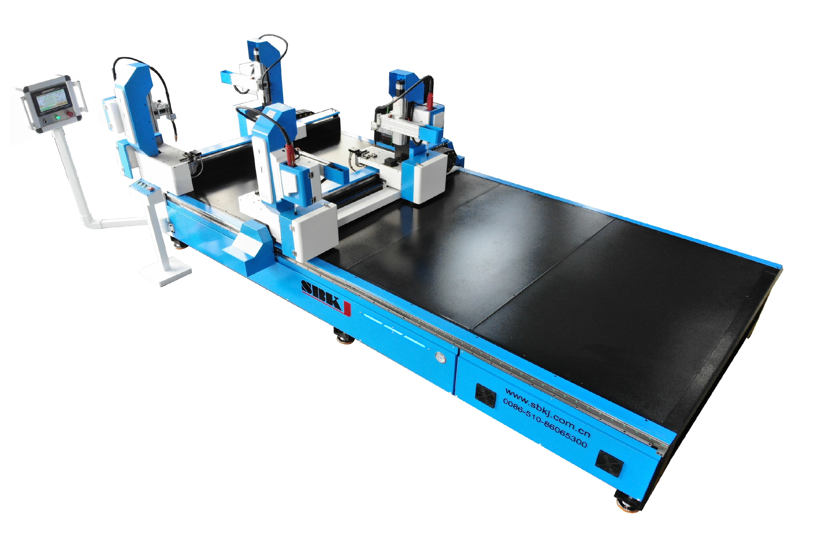
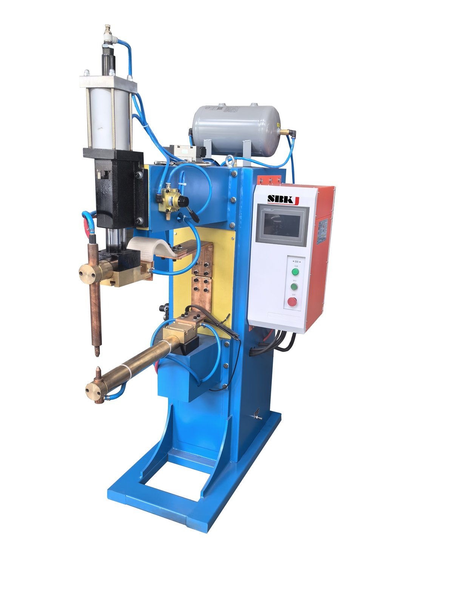
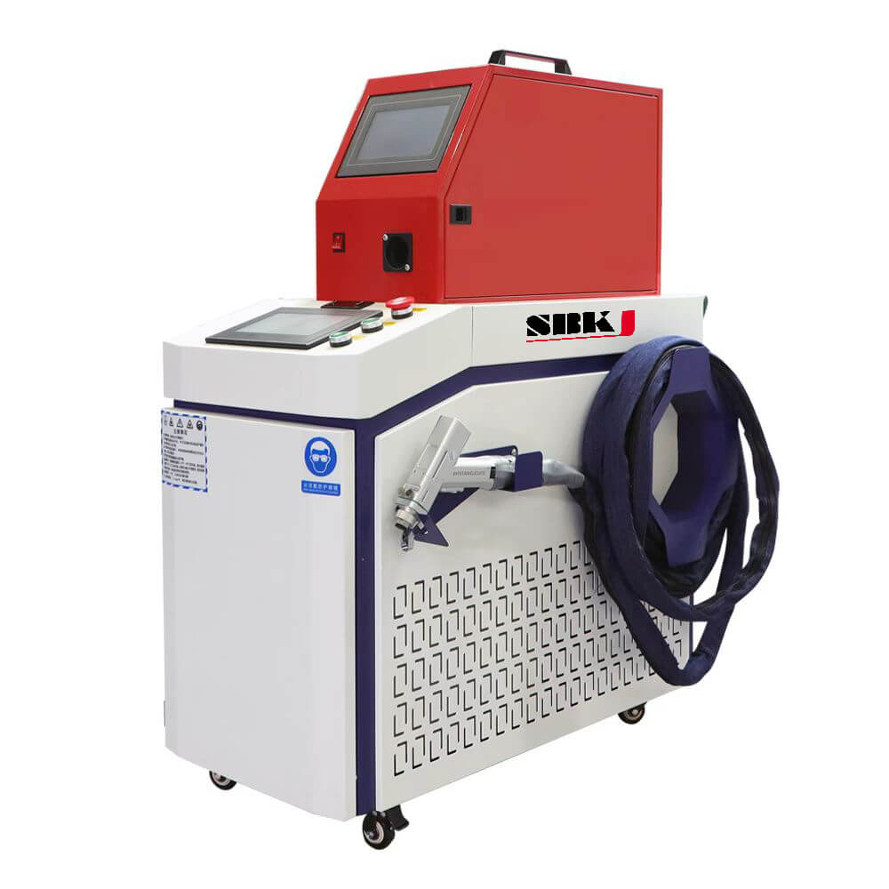

Welding & joining
Duct Welding Machines — Stitch, Seam, Spot and Laser
Stitch welders, seam welders, spot welders, auto angle-iron welders, elbow welders, laser welders and medium-frequency welders for HVAC duct shops.
Overview
Welding is unavoidable once you move beyond lockseam duct — stainless steel duct, pressure-rated duct, round flanges, angle-iron frames and elbows all need welding at some point in the shop. Taokron supplies the full family of welding machines designed for HVAC duct work, from low-cost stitch welders up to fiber laser hand welders. The stitchwelder SBSW-30-2Z and the automatic SB-ZF1500 cover linear seam welds on rectangular and round duct. The seam welder and spot welder SBDN-40 handle sheet-metal lap joints. The SBYFLHJ-50 welds round flanges to spiral duct. The SB-FS1535L four-gun auto angle-iron welding machine builds angle-iron flanges in a single cycle. Specialist machines include the elbow welder for segmented round elbows, the handheld fiber laser welder for fast clean welds on stainless and aluminium, and the medium-frequency welder for high-amperage short-cycle welds. Buyer profile: stainless or pressure-rated duct producers, spiral duct shops, fabricators building angle-iron flange systems, and contractors moving into architectural or hygienic duct markets.
Machines in this category
Click any machine to view full specifications, video and datasheet.

Stitchwelder SBSW-30-2Z
Manual stitch welding for duct seams

Automatic Stitchwelder SB-ZF1500
Servo-driven linear stitch welding

Seamwelder
Roller seam welding for continuous joints

Spotwelder SBDN-40
Resistance spot welder

Round Flange Welding Machine SBYFLHJ-50
Welds round flanges to spiral pipe

Elbow Welder
Segmented round elbow welding

Four Gun Auto Angle Iron Welding SB-FS1535L
4-gun automatic angle-iron frame welder

Medium Frequency Welding Machine
High-amperage short-cycle welder

Handheld Laser Welding Machine
Fiber laser manual welder
Specifications at a glance
Compare the flagship models in this category. Full specifications are on each individual product page.
| Machine | SB-ZF1500 | SBDN-40 | SBYFLHJ-50 | SB-FS1535L |
|---|---|---|---|---|
| Type | Stitch (servo) | Spot (resistance) | TIG / MIG | Angle-iron auto |
| Max material | 3 mm | 1.2+1.2 mm | 2–5 mm | angle 40x40 mm |
| Cycle / speed | servo programmable | 30-60 cycles/min | variable | single cycle frame |
| Power | 4 kW | 40 kVA | 100 kW | 4x 250 A |
| Application | linear duct seam | lap joints | round flange to pipe | angle-iron flange |
How to choose
First, ask whether you weld at all. If you only run lockseam galvanised duct, you may not need any welder in the shop. As soon as you move to stainless, pressure-rated, or round flanged duct, welding becomes a requirement. Second, match machine to joint type: stitch welder (SBSW / SB-ZF1500) for linear seams, spot welder (SBDN-40) for lap joints, SBYFLHJ-50 for round flange-to-pipe welds, SB-FS1535L for angle-iron flange frames, elbow welder for segmented round elbows. Third, consider laser: the handheld fiber laser welder gives clean cosmetic welds on thin stainless and aluminium with minimal distortion — it is worth the premium on architectural or hygienic duct projects. Medium-frequency welders are the choice where you have a short-cycle, high-amperage job and need energy efficiency over a standard transformer welder.
Standards and compliance
ISO 3834 welding quality management, AWS D1.3 structural welding — sheet steel (U.S.), EN 1090 execution of steel structures, ISO 9001:2015 quality management. Machines are CE certified and meet IEC 60974 for welding equipment safety.
Frequently asked questions
Why would I use a stitch welder instead of a continuous seam welder?
Stitch welding places a series of short welds along a seam rather than one continuous weld — it uses less heat, causes less distortion on thin sheet, and is faster to program. For HVAC duct longitudinal seams on 1-2 mm stainless, stitch welding is the industry default.
Can the SBYFLHJ-50 weld different flange diameters?
Yes — it welds the round angle flanges produced on the SBYFL line (Φ250 to Φ1800 mm) with a changeable fixture. Changeover between diameters is a few minutes once the fixture set is in place.
Is the handheld laser welder safe for shop operators?
Yes, with the standard safety package: the machine ships with Class 4 laser goggles and an interlocked work enclosure. Operator training during commissioning covers safety, beam handling, and recommended personal protective equipment.
What power supply do these welders need?
Most Taokron welders are 380 V 3-phase 50 Hz standard. We can configure 415 V 50 Hz (AU/NZ), 480 V 60 Hz (North America) or 220 V 3-phase on request — please confirm at order stage so we ship with the correct transformer and contactors.
Workshop integration patterns
Welding machines on a duct line are second-stage stations that sit downstream of the forming station. The longitudinal seam welder closes the seam on rolled tube before the duct goes to flanging; the circumferential welder attaches angle flanges or reinforcement bars on heavy industrial duct; the spot welder tacks corner joints and bracing on rectangular duct above 2 mm wall thickness. Taokron welding stations integrate with both the spiral duct line and the rectangular SBAL line. They are supplied with fume extraction connection points, operator screens, and dedicated 415V three-phase power feeds as standard.
Buyer playbook
Welding-machine buyers fall into two clear groups. Industrial duct fabricators (chemical plant exhaust, mining ventilation, marine engine room) need heavy-gauge MIG or stick welding stations and prioritise duty cycle and torch reach. Stainless or food-grade fabricators need TIG or laser welders with argon shielding and prioritise weld appearance and HAZ control. Taokron supplies both, but the right machine depends entirely on which group you are in — we will ask in the first reply to your enquiry. New customers should always request weld samples from the Taokron sample library before specifying a machine.
Related categories
Buyer's guides & pricing
Comparing suppliers or budgeting a line? These vendor-neutral guides name the real manufacturers and give realistic 2026 price ranges.
Ready to specify your line?
Send us the project brief — Taokron engineers respond within 12 hours with a sized quotation and GA drawing.
Get a quotation in 12 hoursPrice request
Ask for a quotation
Tell us what you make, the duct sizes and where the machines will run. A Taokron engineer replies within 12 hours with a sized quotation and a layout drawing.
Quotation for: Duct Welding Machines — Stitch, Seam, Spot and Laser
Several machines or a complete duct line? Use the full inquiry form
Page reviewed by Taokron Engineering & QA · Last verified